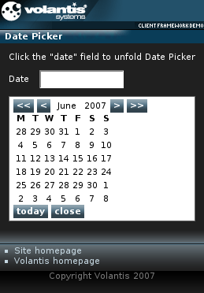

The Date Picker widget allows users to easily fill in a date form field by selecting a date from a calendar display. Some of the calendar properties can be specified using the load action.

<xf:input id="date" ref="date"> <xf:label style="mcs-container: 'input-label'">Date </xf:label> </xf:input>
<widget:date-picker id="myDatePicker" inputField="date"> <widget:load src="service/date-picker" when="onload"/> <widget:button action="myDatePicker#previous-year"> << </widget:button> <widget:button action="myDatePicker#previous-month"> < </widget:button> <widget:display property="myDatePicker#month"/> <widget:display property="myDatePicker#year"/> <widget:button action="myDatePicker#next-month"> > </widget:button> <widget:button action="myDatePicker#next-year"> >> </widget:button> <widget:calendar-display style=""/> <widget:button action="myDatePicker#set-today">today</widget:button> <widget:button action="myDatePicker#dismiss">close</widget:button> </widget:date-picker>
<widget:load src="service/date-picker" when="onload"/>
<response:response xmlns="http://www.w3.org/2002/06/xhtml2"
xmlns:mcs="http://www.volantis.com/xmlns/2006/01/xdime/mcs"
xmlns:response="http://www.volantis.com/xmlns/2006/05/widget/response">
<response:head/>
<response:body>
<response:date-picker range-start="2000-01-01"
range-end="2010-12-31" current-date="2007-01-01"/>
</response:body>
</response:response>
<?xml version="1.0" encoding="UTF-8"?>
<html xmlns="http://www.w3.org/2002/06/xhtml2"
xmlns:mcs="http://www.volantis.com/xmlns/2006/01/xdime/mcs"
xmlns:template="http://www.volantis.com/xmlns/marlin-template"
xmlns:widget="http://www.volantis.com/xmlns/2006/05/widget"
xmlns:si="http://www.volantis.com/xmlns/2006/01/xdime2/si"
xmlns:xf="http://www.w3.org/2002/xforms" xmlns:event="http://www.w3.org/2001/xml-events"
xmlns:urid="http://www.volantis.com/xmlns/marlin-uri-driver">
<head>
<title>Date Picker Widget</title>
<link rel="mcs:theme" href="/themes/main.mthm"/>
<link rel="mcs:layout" href="/layouts/main.mlyt"/>
<xf:model>
<xf:instance>
<si:instance>
<si:item name="date"/>
</si:instance>
</xf:instance>
</xf:model>
<style type="text/css" media="handheld,all">
widget|calendar-display {
width:auto;
height:100%;
}
widget|display {
padding-left: 5px;
padding-right: 5px;
}
#myDatePicker{
mcs-effect-style: slide-top;
mcs-effect-duration: 2s;
}
#myDatePicker:mcs-concealed{
mcs-effect-style: fade;
mcs-effect-duration: 2s;
}
</style>
</head>
<body id="body_id">
<template:apply href="templates/demo-main.xdtpl">
<template:binding name="title" value="Date Picker"/>
<template:binding name="content">
<template:complexValue>
<div>
<div style="mcs-layout:'/layouts/date-picker.mlyt'">
<div style="mcs-container: 'title'">Click the "date" field to unfold
Date Picker</div>
<xf:input id="date" ref="date" style="mcs-container: 'input'">
<xf:label style="mcs-container: 'input-label'">Date </xf:label>
</xf:input>
<widget:date-picker class="widget" id="myDatePicker" inputField="date"
style="mcs-container: 'calendar'">
<widget:load src="service/date-picker" when="onload"/>
<widget:button action="myDatePicker#previous-year">
<< </widget:button>
<widget:button action="myDatePicker#previous-month">
< </widget:button>
<widget:display property="myDatePicker#month"/>
<widget:display property="myDatePicker#year"/>
<widget:button action="myDatePicker#next-month">
> </widget:button>
<widget:button action="myDatePicker#next-year">
>> </widget:button>
<widget:calendar-display style=""/>
<widget:button action="myDatePicker#set-today">today</widget:button>
<widget:button action="myDatePicker#dismiss">close</widget:button>
</widget:date-picker>
</div>
</div>
</template:complexValue>
</template:binding>
</template:apply>
</body>
</html>
| Name | Purpose |
|---|---|
| div | A section used to add extra structure to documents. Style sheets can be used to control the presentation. |
| response:date-picker | Allows to set the Date Picker widget properties via AJAX. |
| si:instance | Container for data items used to supply initial values for forms controls, or to provide additional data to be submitted with the form. |
| si:item | Defines an item of instance data that is required if a form control needs to be initialized, or when data not associated with a form control needs to be provided during form submission. |
| widget:button | A general purpose element, used by widgets which need a button-like control. |
| widget:calendar-display | Displays the days of the selected month. |
| widget:date-picker | Defines a Date Picker widget that is bound to a form field. |
| widget:display | An inline widget element used to display some text content. It may be associated with a widget property. In such cases, the displayed content represents the value of the selected property. |
| widget:load | Controls the loading of a widget's contents in relation to the containing page. |
| xf:group | Combines a set of form controls into a user interface component. By applying theme properties on this element, you can control where form fragmentation occurs, and define or override at runtime the link texts specified on form fragment layouts. |
| xf:input | A form control for text input. |
| xf:instance | Optional element that contains instance data associated with the model element. It is used to supply initial values for forms controls, or to provide additional data to be submitted with the form. |
| xf:label | Provides a descriptive label for forms controls. |
| xf:model | Represents a form definition, used as a container for elements associated with its submission. |
| Core attributes | Attributes that are common to XDIME 2 elements. |